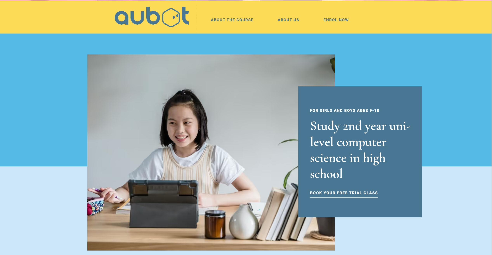
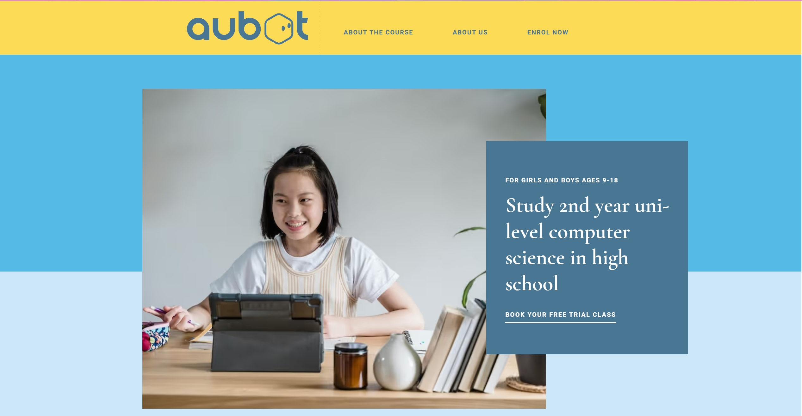
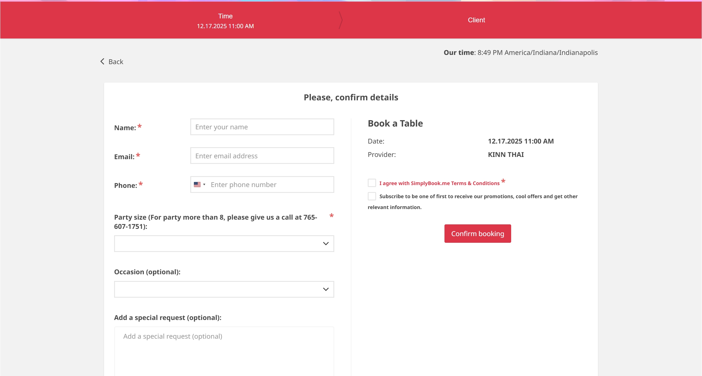
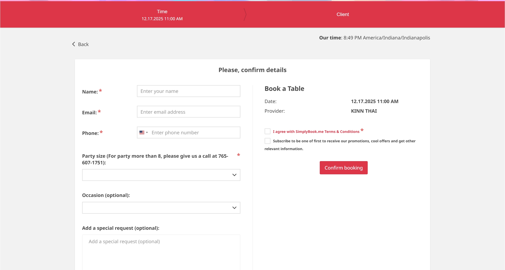

I’m a CS Master’s graduate from Illinois Tech, passionate about using code to build meaningful and interesting projects.
Lately I’ve been building personal projects and sharing updates here and on LinkedIn.
Thanks for stopping by!!
Contact me: jenkaiwang@gmail.com


OCT 2025 – present
 

JUL 2025 – present
 

OCT 2023 – NOV 2023
JUL 2022 – AUG 2022
Class name: Implementation of Machine Learning Algorithms
Class name: : Fundamentals of Data Communication and Computer Networks
SEPT 2025 - DEC 2025
Built a RAG-based movie recommendation system using Meilisearch BM25 and vector search. Implemented an LLM router to choose the best retrieval method based on each query. Delivered an interactive Gradio chat UI and integrated retrieval tools through an MCP server for end-to-end recommendations.
Visit Github repositoryJUL 2025
Planned an Insurance App project using both Waterfall and Agile (Scrum) methodologies, using AI to support requirement definition, scheduling, and comparing execution trade-offs. Prototyped AI agent workflows with LangChain, AutoGen, and LLMs to demonstrate AI-assisted decision-making, testing, debugging, and multi-agent coordination.
Visit Github repositoryJAN 2025 - MAY 2025
Designed a vending machine software system using an MDA-EFSM architecture with two machine variants and separate data stores. Applied State, Strategy, and Abstract Factory patterns for modular, extensible design. Documented and validated behavior using UML class and sequence diagrams across key end-to-end scenarios.
Visit Github repositorySEP 2024 - DEC 2024
Built an electoral forecasting pipeline for Iowa’s 1st Congressional District using Census API demographics and historical election data to predict turnout and party winners. Conducted EDA, feature engineering, and spatial analysis with district matching and county maps. Trained and evaluated Random Forest for turnout and Keras/TensorFlow models for classification.
Final ReportJAN 2024 - MAY 2024
Designed a relational Healthcare Management System schema covering doctors, patients, insurance, pharmacy, treatment, invoices, and payments. Implemented the MySQL database with tables, indexes, views, and triggers to ensure integrity and performance. Built a Python CLI for CRUD operations and analytics (aggregations, set operations, OLAP-style queries) with robust error handling.
Final ReportJAN 2022 – DEC 2022
This project aims to develop a domain-specific AutoML model for the medical field by integrating expert knowledge.
The goal is to accelerate the development of Medical Diagnosis Support Systems (MDSS).
Award: College Student Research Scholarship, National Science and Technology Council of Taiwan